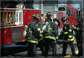

October 20th:
Don't forgot to check free website templates every day, because we add at least one free website template daily.
This is a template designed by free website templates for you for free you can replace all the text by your own text. This is just a place holder so you can see how the site would look like.
You can remove any link to our websites from this template you're free to use the template without linking back to us. Don't want your boss to know you used a free website template ;) .
If you're having problems editing the template please don't hesitate to ask for help on the forum.
If you're looking for beautiful and professionally made templates you can find them at Template Beauty.
To find great hosting providers visit Web Hosting Zoom
October 15th:
If you're looking for beautiful and professionally made templates you can find them at Template Beauty.
If you're looking for beautiful and professionally made templates you can find them at Template Beauty.
Events Scheduled
Tue Dec 2 04:00 PM
- KIVFD Advisory Council Monthly Meeting of Advisory Council regarding the Capital Compaign.
Events Scheduled
Tue Dec 2 04:00 PM
- KIVFD Advisory Council Monthly Meeting of Advisory Council regarding the Capital Compaign.
| Firefighter | Number Of Calls | |
| Mike Evans | 326 | 69% |
| Dave Evans Jr | 300 | 65% |
| Brian Harris Jr | 268 | 57% |
| Pat Byrne | 260 | 55% |
| Cordon Pippin | 259 | 49% |
| Loreen Zoffinger | 233 | 66% |
| Jim Ayers Sr | 218 | 64% |